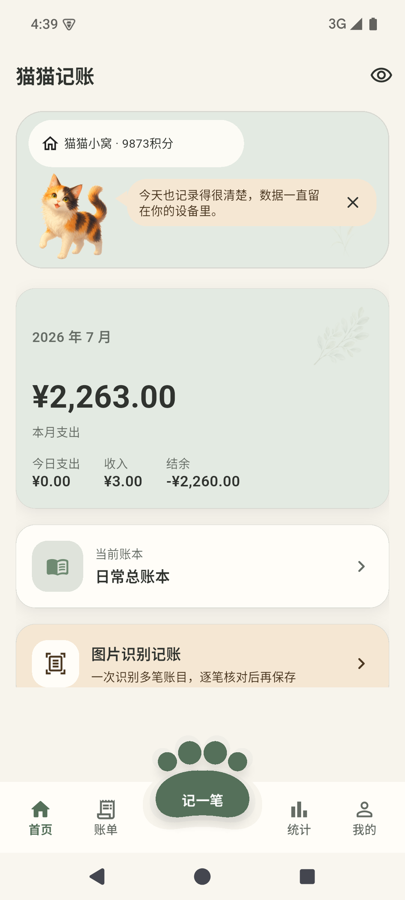

手动记录与清楚账单
支持支出、收入、退款和转账，提供分类、商户、账户、备注、筛选和本地统计。
本地优先的日常记账
无需注册登录。每一笔稳稳留在设备里，手动记账、本地图片识别、共同分账、账单统计与猫猫陪伴，都围绕清楚、轻量和隐私展开。

真实、轻量、可核对
没有信息流、会员入口和消费评价。常用操作保持直接，识别结果始终允许用户检查和修改。
支持支出、收入、退款和转账，提供分类、商户、账户、备注、筛选和本地统计。
从用户主动选择的图片或主动授权的账单画面中提取候选，逐笔修改后再保存。
真实记账行为带来温和互动，不加入饥饿、生病、充值和惩罚。
为不同账本选择本地封面，记录成员、付款人与分摊关系，并在设备内生成结算建议；不提供在线邀请或云同步。
按月和分类查看收支变化，金额隐藏开启后不展示具体数值。
备份由用户主动导出，应用锁可按需使用 PIN 或系统生物识别。
应用不会在后台读取微信内部数据，也没有通知监听和无障碍服务。
账本存储、中文文字识别、商户规则和统计均在本机完成。
OCR 只生成可编辑候选，分类可以暂存为未定，最终保存由用户决定。
应用不提供云同步，导出的备份文件需要由用户选择安全位置保存。
公开说明
以下页面依据当前 Android 工程、依赖和实际功能编写，并在版本变化时同步更新。
隐私、权限、数据删除和应用使用问题都可以通过邮箱反馈。